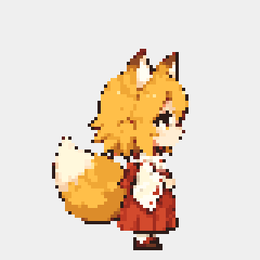

Giữ bộ hình P1 v5 đã duyệt. Thay cách quyết định nghỉ; không thêm hoặc vẽ lại asset.

Ảnh chụp từ renderer Windows thật, giữ thời gian khung hình đo được. Senko quay về tư thế phù hợp trước khi ngáp, không ngồi–đứng thừa.
Năng lượng 0,10 và idle 600 giây được tiêm để tạo tình huống mệt. Sau bốn khung Sleep, test tiêm idle về 0 để kiểm tra thức sớm; GIF lặp chỉ để xem lại một ca test; bản chạy thật không lặp ngủ/thức mỗi hai giây. Đây không phải đo thời gian hồi sức đầy đủ hoặc QA chuột tay. Ảnh chào riêng chưa có, chỉ Wake P1 được hiển thị.
| Tình huống | Kết quả |
|---|---|
| Khỏe, idle 10 phút | Không ép ngủ; giữ lựa chọn sinh hoạt của Brain. |
| Đang mệt thật | Giữ đợt hồi sức; ngủ/ngồi theo năng lượng và ngữ cảnh, có ngưỡng vào/ra. |
| Bế hoặc mất điểm tựa | Ngắt nghỉ; Held/Fall ưu tiên, không giữ cơ thể lơ lửng vì clip. |
| Chỉ có ý định nghỉ, chưa ngồi/ngủ | Không hồi năng lượng giả. |
| Chăm sóc | Clock mô phỏng: đủ 50 phút hoạt động; offer thật mới đặt cooldown 30 phút; nghỉ liên tục 5 phút tính lại. |
Chào, mời trà/vươn vai, chờ và rút lời mời còn cần ảnh đúng được duyệt. Logic có token hiển thị, timeout, tuyến tới điểm thấy rõ và đường ngắt; không dùng Headpat hoặc clip khác thay nghĩa.